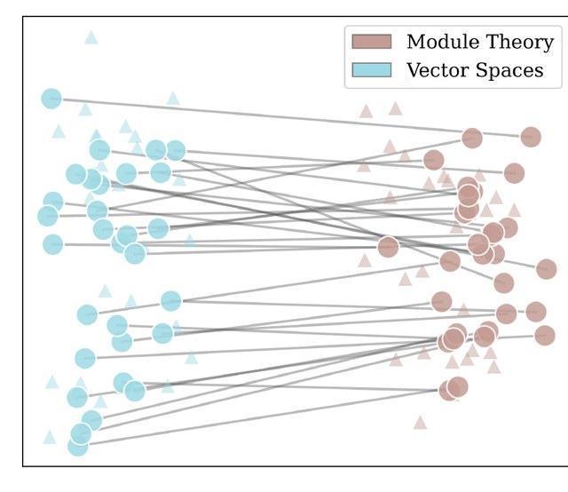
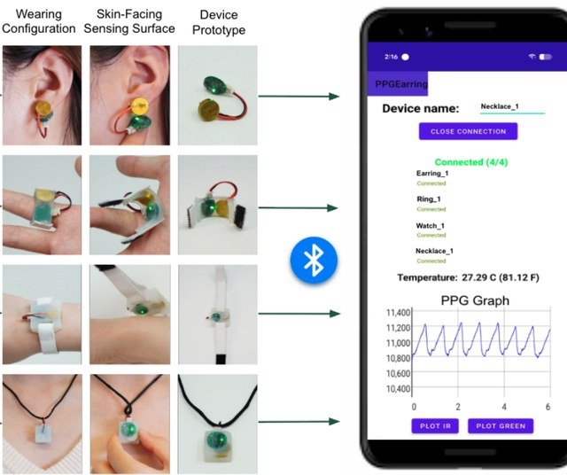
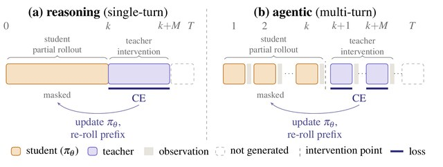
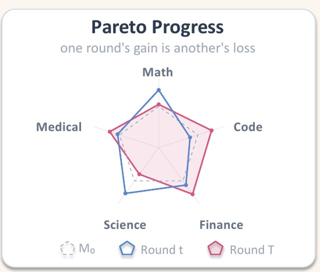
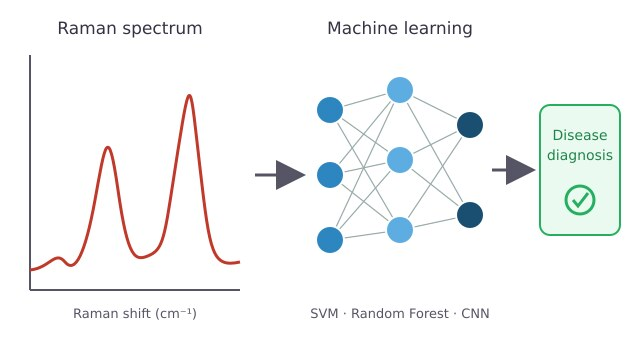
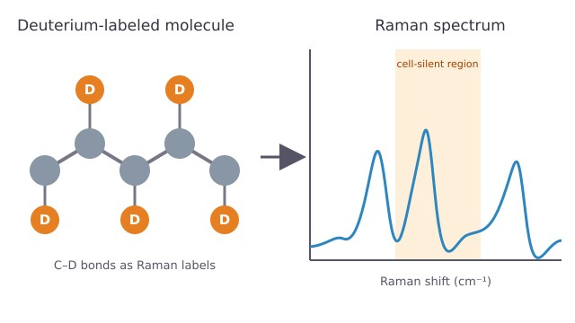

|
Jiaying Ye
I am an undergraduate student at the
University of Washington
,
studying Applied Mathematics–Data Science and Informatics.
My research interests lie at the intersection of
machine learning, wearable sensing, physiological
signal processing, and mathematical AI.
I currently work with the Ubicomp Lab and Math AI Lab
at the University of Washington, where I study
wearable physiological sensing and representation
learning for mathematical reasoning.
Email
/
CV
/
GitHub
/
Google Scholar
|
|
|

|
Does My Embedding Reflect That A = B?
Evaluating Mathematical Equivalence in
Embedding Models
Jiaying Ye,
Samarth Rao,
Leo Carlin,
Kedar Chintalapati,
Saharsh Bhargava,
Rachit Jaiswal,
Michael Zhou,
Jared Darlington,
Vasily Ilin,
Jarod Alper,
Henry Kvinge
ICML 2026 AI4Math Workshop
arXiv
/
code
Evaluating whether embedding models capture
mathematical equivalence across formal and
informal mathematical statements.
|
|

|
Multi-site PPG: An In-the-Wild
Physiological Dataset from Emerging
Multi-site Wearables
Jiayi Shao,
Jiaying Ye,
Shengyao Liu,
Zachary Englhardt,
Girish Narayanswamy,
Vikram Iyer,
Qiuyue (Shirley) Xue
NeurIPS 2026,
Datasets and Benchmarks Track
arXiv
An in-the-wild physiological dataset collected
across multiple wearable form factors for
benchmarking multi-site PPG sensing and
wearable health monitoring.
|
|

|
Learning from Teacher Continuations at Student States
Haojin Wang*,
Dylan Zhang*,
Huaibo Chen,
Suhao Yu,
Yihang Sun,
Zhanyang Jin,
Jiaying Ye,
Dianqi Li,
Prasanna Sattigeri,
Kamal Youcef-Toumi,
Hao Peng
ICLR 2027, under review
arXiv
/
project page
OLIVE (Online Interventional Distillation) trains an evolving student on teacher continuations of student-generated prefixes, for reasoning and long-horizon agentic tasks.
|
|

|
ParetoRSI-Gym: Can AI Agents Improve Language Models Across Multiple Domains?
Haojin Wang,
Yangzhen Wu,
Zeyi Chen,
Jian Xie,
Jiaying Ye,
Lili Meng,
Shuyun Tang,
Shangding Gu,
Dawn Song
ACL ARR 2026 October, under review
arXiv
A benchmark gym for studying whether AI agents can improve language models across multiple domains.
|
|

|
Recent Research Progress in the Integration
of Raman Spectroscopy with Machine Learning
Algorithms for Disease Diagnosis
Zefeng Zheng*,
Ying Cui*,
Boyou Zhang*,
Yang Li,
Yongjie Liu,
Jiaying Ye,
Feng Yuan,
Khek-Yu Ho,
Jing Liu,
Lijia Wang
Nano Research,
2025
paper
A review of machine-learning approaches
for Raman spectroscopy-based disease
diagnosis and biomedical analysis.
|
|

|
Raman Spectroscopy of Deuterium-Labeled
Macromolecules: Emerging Strategies
in Biomedical Research
Zefeng Zheng*,
Ying Cui*,
Boyou Zhang*,
Yang Li,
Yongjie Liu,
Shanji Fan,
Jiaying Ye,
Feng Yuan,
Jing Liu,
Lijia Wang
International Journal of Biological
Macromolecules
,
2025
paper
A review of emerging applications of
deuterium labeling and Raman spectroscopy
in biomedical research.
|
Education
University of Washington
Applied Mathematics–Data Science
and Informatics
Expected Autumn 2026
GPA: 3.96/4.00
|
Experience
Ubicomp Lab, University of Washington
Research Assistant,
January 2026 – Present
Wearable sensing, multi-site PPG,
ECG quality filtering,
and physiological signal analysis.
Math AI Lab, University of Washington
Research Assistant,
September 2025 – Present
Mathematical representation learning,
contrastive fine-tuning,
hard-negative generation,
and formal–informal retrieval.
Stanford Rural Education Action Program
Research Assistant,
August 2024 – Present
Statistical analysis of maternal
socioeconomic status and early
childhood development.
National Clinical Research Center
for Child Health
Research Assistant,
June 2022 – July 2024
Machine-learning applications in
biomedical Raman spectroscopy.
VMware LLC
Virtualization Infrastructure Intern,
June 2025 – September 2025
Infrastructure automation,
virtual-machine provisioning,
and performance testing.
|
|